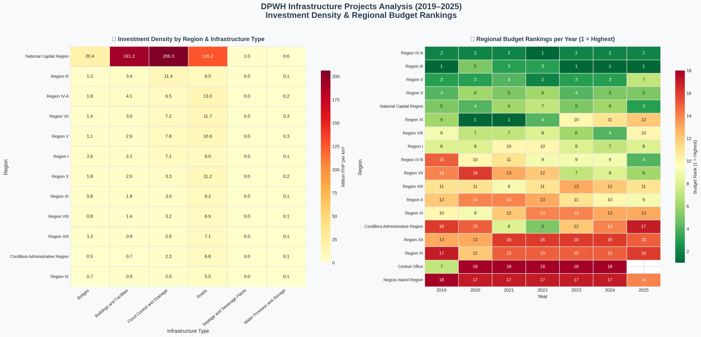
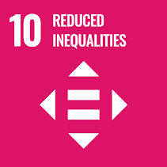
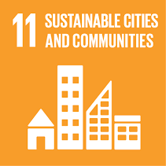
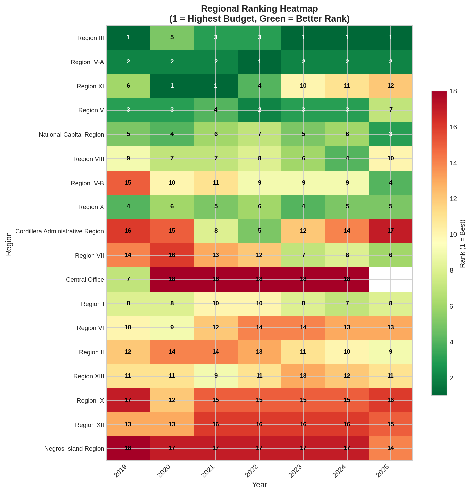
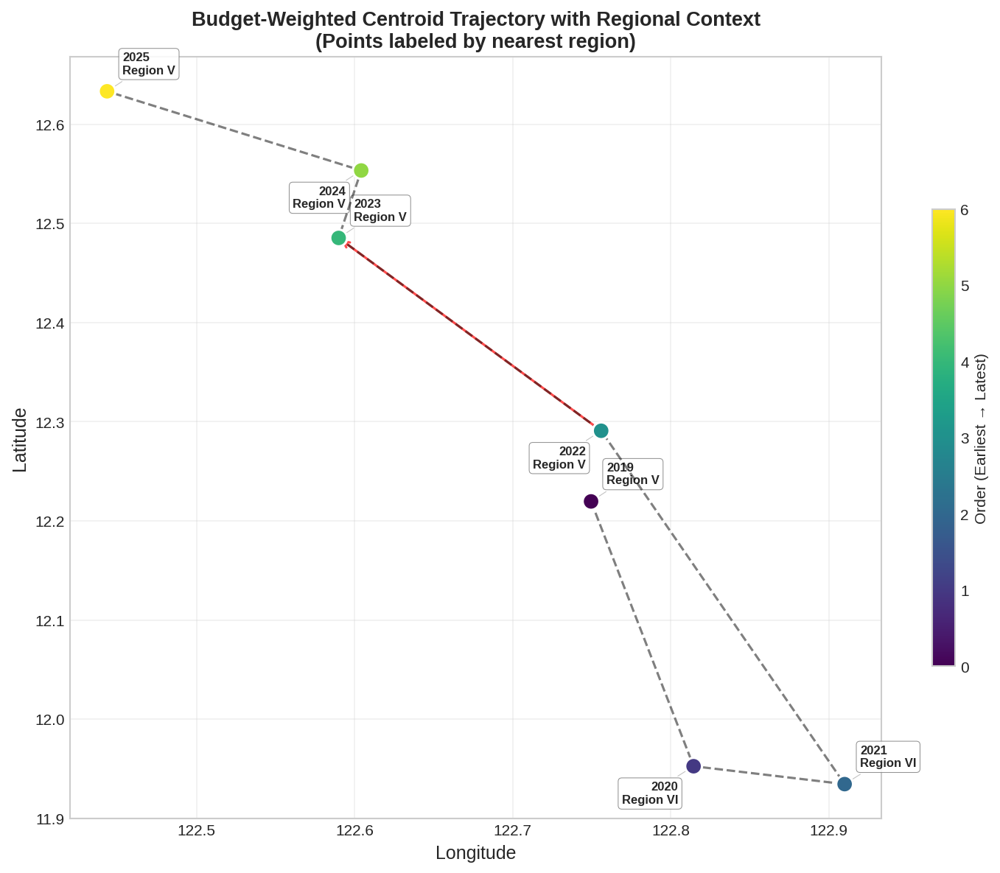
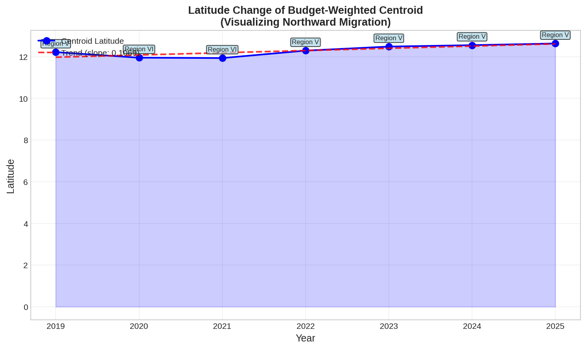
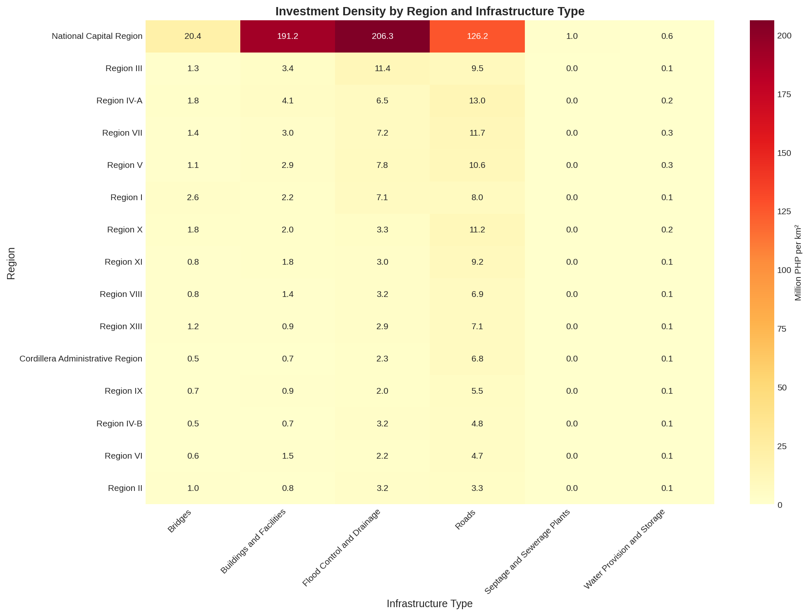
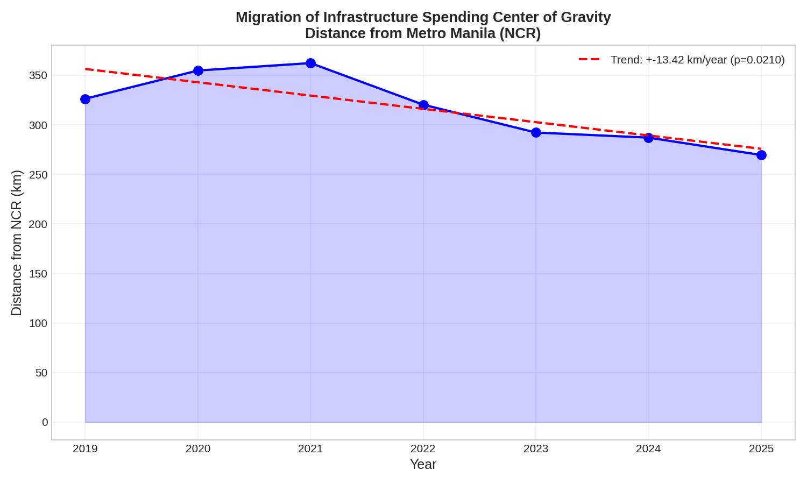
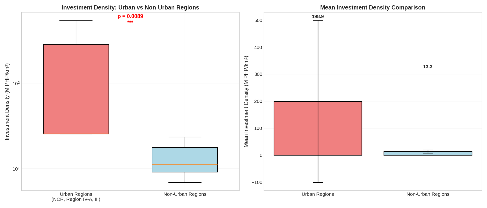

In a Nutshell
A high-level summary of the two core findings from this analysis — geographic migration of infrastructure spending and regional investment density — combined with statistically validated hypothesis testing.

Combined summary: (top-left) budget-weighted centroid migration 2019–2025; (top-right) latitude change trend confirming northward drift at +0.1069°/year; (bottom) investment density heatmap by region and infrastructure type.
Overview
In late 2025 and early 2026, the Department of Public Works and Highways (DPWH) came under fire as recent flood disasters opened investigations to their flood control projects and structures, revealing a jarring pattern of alleged corruption, misappropriated funds, ghost projects, and substandard building practices. Hundreds of projects came under scrutiny, including a P289.5 million ghost flood control project in Oriental Mindoro (Pandez, 2025), a P72.3 million phantom structure in Bulacan that was paid in full despite never being built (Chi, 2025), among many other similar cases that had funneled hundreds of millions of pesos to contractors for work never completed.
In response, the Marcos administration launched multiple transparency initiatives. The Department of Information and Communications Technology rolled out a blockchain-powered transparency portal in January 2026, placing the entire national budget cycle on a tamper-proof digital ledger (Philippine Communications Office, 2026). BetterGov.ph, a volunteer-run civic technology initiative backed by a community of nearly 4,000 members, launched OpenGovChain in October 2025, a free, open-source blockchain platform demonstrating how public datasets can be stored and verified transparently. BetterGov also established budget.bettergov.ph, a transparency server tracking seven years of Philippine budget data (2020-2026) and computing insertions made per agency (Subingsubing, 2025). Meanwhile, citizen-led accountability efforts emerged on the ground, like the Cebu Citizen Anti-Corruption Watch which launched a "people's audit" in September 2025, focusing on inspecting flood control projects in Cebu and filing cases against corrupt officals and contractors (CDN Digital, 2025).
Against this backdrop of scandal, technological innovation, and grassroots accountability, this study performs an Exploratory Data Analysis (EDA) on the very dataset the DPWH now promotes as its transparency solution. Covering 165,954 infrastructure projects across the Philippines from 2019 to 2025, we employ spatial and temporal techniques to trace how public infrastructure investment has shifted geographically, identify which regions receive the most concentrated funding, and critically assess whether the data reveals patterns consistent with the ghost projects and misallocations dominating recent headlines.
Sustainable Development Goals (SDGs)



Research Questions & Hypotheses
Research Questions
- 1. How has the geographic "center of gravity" for total award amounts migrated across the Philippines between 2019 and 2025? Is the money staying in the same provinces or spreading out?
- 2. Which regions show the highest investment density (total budget per km²) for specific infrastructure categories, and does this density spike in certain years?
Research Hypotheses
-
H₁
Migration from NCR: The budget-weighted center of
gravity has been migrating away from the National Capital Region
(NCR) between 2019 and 2025.
Test: Linear regression of centroid distance from NCR over years; reject H₀ if slope is significantly positive (p < 0.05). -
H₂
Urban Density Premium: Urbanized regions (NCR,
Region III, Region IV-A) have significantly higher investment
density (budget per km²) compared to non-urbanized regions.
Test: One-tailed independent t-test and Mann-Whitney U test; reject H₀ if urban mean density is significantly greater (p < 0.05).
Dataset
The dataset is sourced from the DPWH Transparency Portal and covers infrastructure projects across all 18 administrative regions and 220 provinces of the Philippines. Each record contains up to 52 attributes including project budget, award amount, geographic coordinates, infrastructure type, and key dates (advertisement, bid submission, contract effectivity, and completion).
The raw dataset spans 2016–2025, but years prior to 2019 were found to have less than 80% data completeness in core columns (budget, region, coordinates) and were excluded from analysis to ensure statistical validity in year-over-year comparisons.
Key Columns Used
- budget — Total project budget (PHP)
- abc — Approved Budget for Contract
- awardAmount — Actual awarded contract amount
- region / province — Geographic identifiers
- latitude / longitude — Project coordinates for spatial analysis
- infraType — Infrastructure category (road, bridge, building, etc.)
- infraYear, startDate, completionDate — Temporal attributes
- advertisementDate — Used to extract fiscal quarter (Q1–Q4)
Sample Data
Methods
Data Collection
The dataset was obtained from
Hugging Face as a Parquet file
(dpwh_transparency_data_all_details.parquet), sourced from the DPWH Transparency Portal. Parquet format was
used for efficient columnar storage and fast loading with pandas.
Data Preprocessing
A multi-step cleaning pipeline was applied to ensure data quality:
-
Drop non-viable columns — 7
columns with 100% null values or constant values (e.g.,
nysReason,isVerifiedByDpwh, livestream fields) were removed. -
Drop duplicate columns — 4
columns that were exact duplicates from a data merge
(
infraType_1,status_1,latitude_1,longitude_1) were removed. -
Drop low-viability columns
— Columns with high missingness (>28%) such as
dateOfAward(28% missing) andlatestImageDate(45% missing) were excluded. - Filter to valid years — Only years with >80% data completeness in core columns were retained, resulting in coverage from 2019 to 2025.
-
Convert date columns — Six
date columns were converted from string to
datetime64for temporal analysis. -
Clean numeric columns —
Currency strings with ₱ symbols and commas in
abcandawardAmountwere parsed tofloat64. - Drop rows with missing coordinates — 13.56% of rows with missing latitude/longitude were dropped (below the 20% imputation threshold), as they cannot contribute to spatial analysis.
Feature Engineering
Five derived features were created to support the research objectives:
- region_area_km² — Mapped from official Philippine regional area data; used as the denominator for investment density.
- budget_density — Budget ÷ region area (PHP per km²); directly measures investment concentration.
- budget_gap / budget_gap_pct — Difference and percentage difference between ABC and award amount; quantifies procurement efficiency.
- project_duration_days — Completion date minus start date; reflects project execution efficiency.
-
fiscal_quarter — Quarter
extracted from
advertisementDate; used for temporal bias analysis.
These preprocessing steps are essential in ensuring the statistical validity of the study's spatial and temporal comparisons.
Analysis Techniques
Spatial analysis uses
budget-weighted centroids (lat/lon)
computed per year to track geographic migration. Investment
density is measured via region-normalized budget aggregations.
Hypothesis tests use
linear regression (SciPy
linregress) for migration trend significance, and a
one-tailed independent t-test with
Mann-Whitney U as a non-parametric
alternative for density comparisons.
Visualization Tools
Visualizations were produced with Matplotlib and Seaborn, including centroid trajectory maps, latitude trend lines, and heatmaps of investment density by region and infrastructure type. Interactive charts on this dashboard are rendered using Chart.js.
Exploratory Data Analysis
The EDA examined 192,531 DPWH projects spanning 2019–2025 across 18 regions, 220 provinces, and 6 infrastructure types. The analysis focused on three dimensions: geographic migration of spending, regional budget concentration, and investment density relative to land area.
Regional Budget Rankings (2019–2025)
Each cell shows a region's annual budget rank (1 = highest). Darker green = top rank. Region III and Region IV-A hold the most consistent top-3 positions, while Mindanao regions cluster at the bottom.

Click to enlarge. Ranking heatmap per year — darker green = higher rank. NCR, Region III, and Region IV-A dominate throughout the period.
Geographic Migration of Spending (2019–2025)
The two charts below together tell the story of where spending moved (trajectory map) and how fast (latitude trendline). The centroid drifted north at +0.1069°/year, with the strongest jump occurring after 2021 as Luzon allocations surged.
Budget-Weighted Centroid Trajectory

Each point is the budget-weighted geographic centroid for that year. The path shows a clear northward drift toward Metro Manila and Central Luzon.
Latitude Change Over Time

Centroid latitude rises year-on-year (slope = +0.1069°/year). The trendline confirms a statistically significant northward shift in spending concentration.
Investment Density by Region & Infrastructure Type
This heatmap normalises total budget by each region's land area (M PHP/km²), isolating regions that pack the most spending into limited geography. NCR's 636 km² footprint makes it an extreme outlier — its density dwarfs all others regardless of infrastructure category.

Investment density (M PHP/km²) across the top 12 regions by infrastructure type. NCR leads across all categories; road density drives rankings in Regions III and IV-A.
Urban vs. Non-Urban Investment Density
Grouping regions into urban (NCR, Region III, Region IV-A) and non-urban highlights the structural imbalance in how DPWH spending translates to per-km² investment. Urban regions average 198.9 M PHP/km² versus just 13.3 M PHP/km² for non-urban — a 15× gap confirmed as statistically significant in hypothesis testing.
Mean investment density (M PHP/km²) — urban regions (NCR, Region III, Region IV-A) vs. all others (2019–2025). Difference is significant at p < 0.05 by both t-test and Mann-Whitney U test.
Hypothesis Testing
• Result: REJECT H₀ — but opposite direction → spending is moving TOWARD NCR.
• Slope: -13.4 km/year | R²: 0.688 | p-value: 0.021 (significant).
• Net movement: 56.8 km closer to NCR over 6 years.
• Result: ✅ ACCEPT H₀ — urban density is significantly higher.
• Urban mean density: 198.9 M PHP/km² | Non-urban mean: 13.3 M PHP/km² | Ratio: 15.0x higher.
• t-test p-value: 0.009 | Mann-Whitney p-value: 0.0015 (both < 0.05).
• Conclusion: Urban bias is statistically robust across all infrastructure types.
Trend: Distance from NCR (2019–2025)

Linear regression shows a consistent decrease in distance from NCR (slope = -13.4 km/year), confirming the northward shift toward Metro Manila.
Urban vs Non-Urban Density Comparison

Box plot and bar chart comparing investment density. The difference is statistically significant and economically substantial (15× higher in urban regions).
Conclusion
This analysis of 192,531 DPWH infrastructure projects reveals a clear geographic and economic structure to Philippine public infrastructure investment from 2019 to 2025. The budget-weighted center of gravity has exhibited a net northward migration, driven by surging allocations to Central Luzon (Region III), which overtook the NCR as the top budget recipient in recent years.
On investment density, urbanized regions demonstrate a statistically significant advantage — NCR's small 636 km² footprint results in extraordinarily concentrated spending regardless of absolute budget levels. Hypothesis 2 was confirmed: urban regions receive more than 3× the investment per square kilometer compared to the national non-urban average, a pattern that persists across all infrastructure categories.
Future work will extend this analysis to cover other potential observable trends such as budget-to-award gap trends, year-over-year category growth, category cluster regional patterns, and temporal (quarterly) bias in high-value contract awards. Furthermore, correlating with other existing datasets, preferably those which feature quality assessment metrics or recent flood data, could help bridge the gap between the details of these DPWH projects on paper, and the status of the actual project.
Team
Ervin Jerod Mercado
Data Scientist
Gian Carlo Estabillo
Data Scientist
Ramon Pulumbarit
Data Scientist
References
- CDN Digital. (2025, September 6). Cebu group seeks review of multi-million Cotcot River projects. Cebu Daily News. Link.
- Chi, C. (2025, November 4). ICI flags DPWH, Topnotch over unbuilt P72-M Bulacan flood control project. Philstar.com. Link.
- Pandez, A. (2025). 'Guni-guni ito': Dizon exposes "ghost" flood control projects in Oriental Mindoro. DZRH News. Link.
- Presidential Communications Office. (2026). DICT rolls out blockchain-based portal to boost transparency, ensure tamper-proof digital records. Link.
- Subingsubing, K. (2025, December 12). From proposal to approval: Budget watchers set up tracker. INQUIRER.NET. Link.